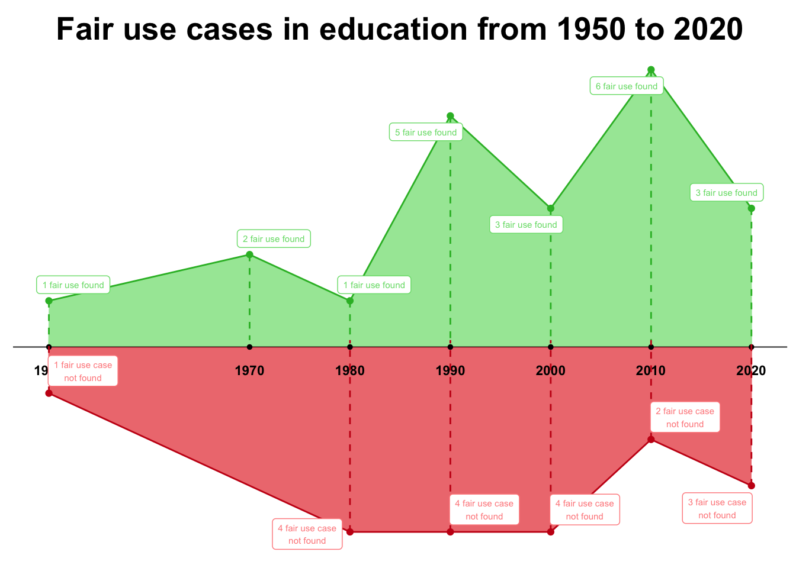

fair_use_cases <- readr::read_csv('https://raw.githubusercontent.com/rfordatascience/tidytuesday/master/data/2023/2023-08-29/fair_use_cases.csv')
fair_use_findings <- readr::read_csv('https://raw.githubusercontent.com/rfordatascience/tidytuesday/master/data/2023/2023-08-29/fair_use_findings.csv')
library(tidyverse)
library(gt)
library(ggrepel)Fair use cases in education
2023
Shiny App
Map
TidyTuesday august 29, 2023
For this weeks TidyTuesday (Rfordatascience, 2023), there are two datasets, both about fair use cases in USA. Like in every other TidyTuesday, the first step is to download the datasets and load the packages.
The step after loading the data is to have a look a it and select the variables that we are going to use for the final plot. This time, I’m going to choose the education related cases.
gt(head(fair_use_cases))| case | year | court | jurisdiction | categories | outcome | fair_use_found |
|---|---|---|---|---|---|---|
| De Fontbrune v. Wofsy, 39 F.4th 1214 (9th Cir. 2022) | 2022 | 9th Circuit | 9th Circuit | Education/Scholarship/Research; Photograph | Fair use not found | FALSE |
| Sedlik v. Von Drachenberg, No. CV 21-1102 (C.D. Cal. May 31, 2022) | 2022 | C.D. Cal. | 9th Circuit | Painting/Drawing/Graphic; Photograph | Preliminary finding; Fair use not found | FALSE |
| Sketchworks Indus. Strength Comedy, Inc. v. Jacobs, No. 19-CV-7470-LTS-VF (S.D.N.Y. May 12, 2022) | 2022 | S.D.N.Y. | 2nd Circuit | Film/Audiovisual; Music; Parody/Satire; Review/Commentary | Fair use found | TRUE |
| Am. Soc'y for Testing & Materials v. Public.Resource.Org, Inc., No. 13-cv-1215 (D.D.C. Mar. 31, 2022) | 2022 | D.D.C. | District of Columbia Circuit | Education/Scholarship/Research; Textual Work; Used in government proceeding | Mixed Result | FALSE |
| Yang v. Mic Network Inc., Nos. 20-4097-cv, 20-4201-cv (2d Cir. Mar. 29, 2022) | 2022 | 2d Circuit | 2nd Circuit | News reporting; Photography | Fair use found | TRUE |
| Viacom Int’l v. Pixi Universal, Civ. Action No H-21-2612 (S.D. Tex. Mar. 25, 2022) | 2022 | S.D. Tex. | 5th Circuit | Painting/Drawing/Graphic; Parody/Satire | Fair use not found | FALSE |
gt(head(fair_use_findings, n = 1L))| title | case_number | year | court | key_facts | issue | holding | tags | outcome |
|---|---|---|---|---|---|---|---|---|
| De Fontbrune v. Wofsy | 39 F.4th 1214 (9th Cir. 2022) | 2022 | United States Court of Appeals for the Ninth Circuit | Plaintiffs own the rights to a catalogue comprised of 16,000 photographs of Pablo Picasso’s work, which was originally compiled by Picasso’s friend in 1932 (the “Zervos Catalogue”). In 1995, after obtaining permission from Picasso’s estate to publish a work illustrating and describing works by Picasso, Defendants Alan Wofsy and his company Alan Wofsy & Associates began publishing The Picasso Project—–a series of volumes reproducing images of Picasso’s work, including 1,492 photographs from the Zervos Catalogue. Plaintiffs sued for copyright infringement. A French court held the photographs were protected by copyright because they “added creative features through deliberate choices of lighting, the lens, filters, [and] framing or angle of view.” In 2001, Plaintiffs obtained a judgment in France that subjected Defendants to damages for any further acts of infringement. In 2012, after discovering copies of The Picasso Project in a French bookstore, Plaintiffs enforced their judgment in France and were awarded €2 million. Plaintiffs sought recognition of the judgment in the U.S. courts. The district court granted summary judgment for Defendants, determining that the French judgment was “repugnant to U.S. public policy protecting free expression” because it failed to provide a fair use defense. Plaintiffs appealed; and Defendants cross-appealed on other defenses. | Whether reproduction of photographs documenting artwork in a reference book that was sold commercially is a fair use. | The panel held that the first factor, the purpose and character of the use, weighed against fair use because Defendants conceded that The Picasso Project was a commercial venture and the use at issue—reproduction of the photographs in a book illustrating Picasso’s works—was not transformative. Specifically, the court noted that Defendants’ use “did not serve an ‘entirely different function’ than the originals,” but had overlapping purposes, and the insertion of informative captions did not “necessarily” transform the works. The second factor, the nature of the copyrighted work, did not favor fair use because, although the works were published and documentary in nature, the French court had concluded that the photographs exhibited creative elements. The court determined that the third factor, the amount and substantiality of the work used, weighed against fair use because Defendants failed to demonstrate that “copying the entirety of each photograph was necessary.” The fourth factor, the effect of the use upon the potential market for or value of the copyrighted work, also weighed against fair use because there is a presumption of market harm when the use is commercial and non-transformative. Although Defendants presented evidence that auction prices for the Zervos Catalogue increased while The Picasso Project was on the market, Defendants had not provided evidence that “widespread appropriation” of the works would not harm the market for the photographs. Weighing all the factors, the court had “serious doubts” that fair use would protect Defendants’ use, and, accordingly, granted summary judgment to Plaintiffs on the public policy defense. | Education/Scholarship/Research; Photograph | Fair use not found |
cases <- fair_use_cases %>%
filter(outcome == "Fair use found" | outcome == "Fair use not found") %>%
select(year, categories, fair_use_found) %>%
mutate(
education = case_when(
stringr::str_detect(categories, "Education") ~ "education_related",
TRUE ~ "Non_education_related"
)
) %>%
filter(education == "education_related") %>%
select(year, fair_use_found) %>%
group_by(year, fair_use_found) %>%
summarise(n = n()) %>%
ungroup() %>%
filter(year >= 1950)And, after creating a new dataset that we are going to use for the plot, is time to create it.
position <- c()
position <- ifelse(cases$fair_use_found == TRUE, append(position, 1), append(position, -1))
cases_plot <- cases %>%
mutate(
position = position
)
redondear_decada <- function(x) {
return(x - x %% 10)
}
cases_plot <- cases_plot %>%
mutate(
year_decade = redondear_decada(year)
)
cases_plot_found <- cases_plot[cases_plot$fair_use_found == TRUE, ]
cases_plot_not <- cases_plot[cases_plot$fair_use_found != TRUE, ]
position_plot_found <- cases_plot_found %>%
group_by(year_decade) %>%
summarise(position_sum = sum(position))
position_plot_not <-cases_plot_not %>%
group_by(year_decade) %>%
summarise(position_sum = sum(position))
position_plot <- merge(position_plot_found, position_plot_not, by = "year_decade", all = TRUE)
ggplot(position_plot, aes(x = year_decade)) +
theme_classic() +
geom_area(aes(x = year_decade, y = position_sum.x), fill="#79DD79", alpha=0.7) +
geom_line(aes(x = year_decade, y = position_sum.x), color="#2FB92F") +
geom_point(aes(x = year_decade, y = position_sum.x), color="#2FB92F", size=1.5) +
geom_hline(yintercept=0, color="black", linewidth=0.3)+
geom_area(aes(x = year_decade, y = position_sum.y), fill="#E73A3A", alpha=0.7) +
geom_line(data=position_plot[!is.na(position_plot$position_sum.y),], aes(x = year_decade, y = position_sum.y), color="#C81717") +
geom_point(aes(x = year_decade, y = position_sum.y), color="#C81717", size=1.5) +
theme(axis.line.y=element_blank(),
axis.text.y=element_blank(),
axis.title.x=element_blank(),
axis.title.y=element_blank(),
axis.ticks.y=element_blank(),
axis.text.x =element_blank(),
axis.ticks.x =element_blank(),
axis.line.x =element_blank(),
legend.position = "bottom"
) +
geom_text(aes(x=year_decade,y=-0.5,label=year_decade, fontface="bold"),size=3, color='black') +
geom_point(aes(x=year_decade, y=0), size=1) +
geom_segment(aes(x=year_decade, y=position_sum.x, yend=0.15, xend=year_decade), color="#2FB92F", linetype="dashed") +
geom_segment(aes(x=year_decade, y=position_sum.y, yend=0.15, xend=year_decade), color="#C81717", linetype="dashed") +
geom_label_repel(aes(x=year_decade, y=position_sum.x, label=paste(position_sum.x, "fair use found")), size = 2, color="#79DD79") +
geom_label_repel(aes(x=year_decade, y=position_sum.y, label=paste((-position_sum.y), "fair use case\nnot found")), size = 2, color="#FF8C8C") +
ggtitle("Fair use cases in education from 1950 to 2020") +
theme(
plot.title = element_text(color="black", size=20, face="bold", hjust=0.5, vjust=-0.25)
) 
References
Rfordatascience. (2023). TidyTuesday 2023-08-09 · rfordatascience/tidytuesday. https://github.com/rfordatascience/tidytuesday/blob/master/data/2023/2023-08-29/readme.md